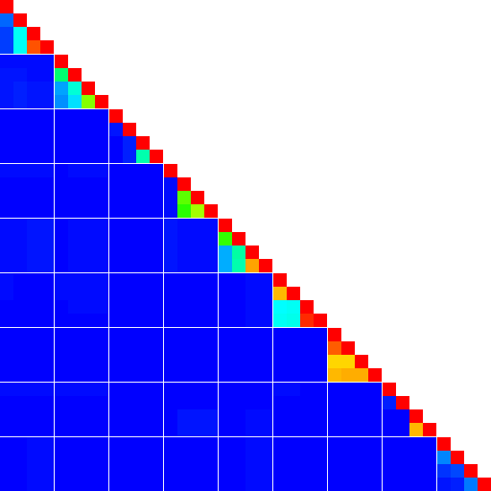

🍴 Usage
📎 CLI
$ heatman -h both testdata/sample.csv
# generate heatman.png.
$ heatman -H # print the following help message.
heatman [OPTIONS] [CSVFILE]
OPTIONS
-a, --additional-line-gap <GAP> specifies the gap of assistant lines per cells.
if GAP is less equals than 0, no assistant lines are drawn.
-c, --color <TYPE> specifies heatmap color type (color or gray), default: color.
-d, --dest <DEST> specifies the destination file.
-h, --headers <HEADER> specifies header model (both, row, column, or no), default: no.
-p, --pixel <SIZE> specifies the pixel size per cell.
-s, --scaler generates scaler of heatmap. If this option was specified,
additional-line-gap, headers, pixel, and CSVFILE are ignored.
-H, --help print this message.
ARGUMENTS
CSVFILE input csv files with no headers.
if no csv files are specified, heatman read csv from stdin.
The value of each cell must be 0.0 to 1.0.
$ heatman -p 15 -a 4 -h both -d heatman2.png testdata/sample.csv
# generate heatmap2.png.
$ heatman -p 15 -h both --color gray -d heatman3.png testdata/sample.csv
# generate heatmap3.png in gray scale.
$ heatman --scaler -d heatman_scaler.png
# generate heatmap_scaler.png which shows scaler of colors.
The Results
Each image is generated by above command. The sources of below images are same.
heatman.png
It was too small. The one cell in csv is shown in one pixel square.
heatman2.png
The one cell in csv is shown in 15-pixel square, and the auxiliary lines are drawn by 4 cells.

heatman_gray.png
The image is gray-scaled heatmap.
heatman_scaler.png
This is generated scaler image. The most right side shows 1.0, and the most left side represents 0.0.
🐳 Docker
docker run --rm -v $PWD:/home/heatman tamada/heatman:latest [OPTIONS] [CSVFILE]
--rm- remove container after running Docker.
-v $PWD:/home/heatman- share volumen
$PWDin the host OS to/home/heatmanin the container OS. - Note that
$PWDmust be the absolute path.
- share volumen